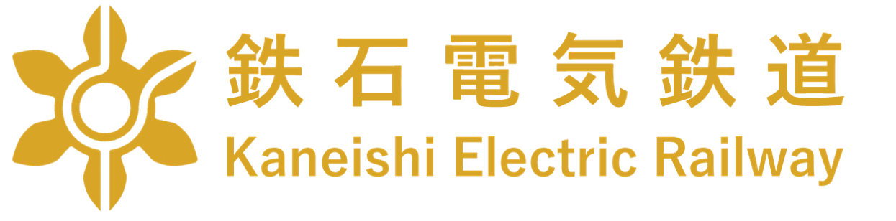
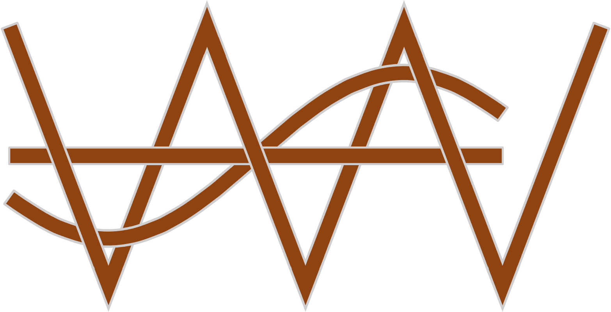
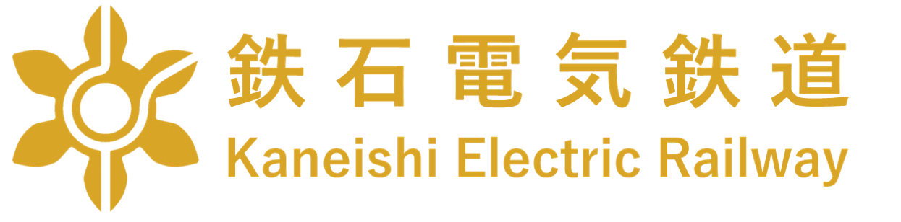
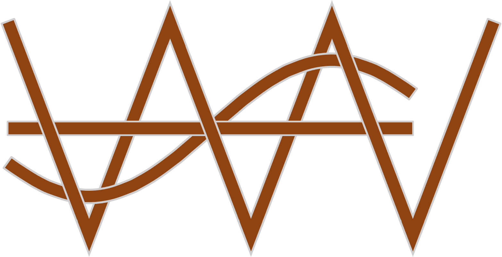

野暮ったい平面作品
なんか幼い
鉄石電気鉄道のロゴマークと社章
K、E、Rの3文字を組み合わせて歯車にし、かつて第二次産業で栄えた鉄石の力強さを思い起こさせることを狙った。 文字の境目は路線のように見えなくもない。
こちらは社章。カ、ネ、イ、シの4文字を組み合わせて車輪のようにした。 内部から放射状に突き出た「カ」、「ネ」の字から力強さを感じる。

VVVFのロゴマーク
三角波比較PWMにおける信号波と搬送波が「VVVF」の文字に見えたので作ってみたロゴ。
ホーム > イラスト
なんか幼い
K、E、Rの3文字を組み合わせて歯車にし、かつて第二次産業で栄えた鉄石の力強さを思い起こさせることを狙った。 文字の境目は路線のように見えなくもない。
こちらは社章。カ、ネ、イ、シの4文字を組み合わせて車輪のようにした。 内部から放射状に突き出た「カ」、「ネ」の字から力強さを感じる。
三角波比較PWMにおける信号波と搬送波が「VVVF」の文字に見えたので作ってみたロゴ。
